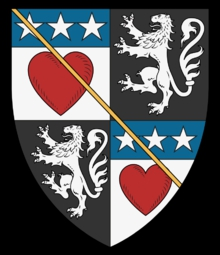

Lord. Blev ca 28 år.
omkring 1364 Nithsdale, Dumfries-shire Scotland. [1]
Steve Douglas Find Relationship : Family Tree DNA Y-DNA Test 37 markers, haplogroup R-M512, FTDNA kit #266923
1392 Dumfries-shire, Scotland. [1]
DOUGLAS. OKRÖNAD KUNGLIGHET
DOUGLAS härstamning är anmärkningsvärt bra; rik genom Frankrike och Flandern, med mycket land och många herrskap, av grevskapet av Longueville och hertigdömet Touraine. De var genom äktenskap perfekt kopplade till Stewarts och i synnerhet till Robert II och senare Robert III.
Jarlen av Douglas utsågs till löjtnant eller guvernör i kungariket medan James II fortfarande var en pojke. År 1439 ärvde en ung sjuttonårig jarl av Douglas rollen och etablerade sig med ett mäktigt följe av 1 000 riddare och anhängare i allt utom namn som kung själv. I en list som skapats av Sir William Crichton, förbundskansler och guvernör i Edinburghs slott där pojken King James "hölls", lockades den intet ont anande, unge earlen av Douglas (naiv eller fräck?) att komma till slottet. Douglas och hans bror tappade snabbt huvudet.
Under den tid som Edward 1:a av England satt som Lord Superior för att ge råd om Skottlands krona fanns flera anspråk på den skotska kronan, bland dem Comyn, Baliol, Douglas och Stewart.
Douglas anspråk var tunt men troligt genom Archibald Douglas äktenskap med Dornagilla, sägs vara syster till Red Comyn och även dotter till Baliols syster. Så de hävdade att Douglas hus härstammade från den äldre dottern till William Lejonets bror (Stewarts hus från den yngre). Senare utmaningar har gjorts att Dornagilla i själva verket var Beatrice, dotter till Sir David Lyndsay från Crawford.
Men när den röda Comyn dödades i Dumfries när han försökte få stöd för sitt påstående, struntade både Comyn och Douglas påståenden. Baliols hus var utrotat. H istoria kan säga att alla påståenden i namnet Baliol skulle ha haft en motvind för att övervinna den dåliga rykte John Baliol agerar som Edwards man som även namnet "John" föll från favör. Stewarts belönades i legenden om Bruce och så segrade i en komplex process avsläktforskning, makt och makt i vapen.
DOUGLAS 1 generation
Egidia Stewart (1358 - 1395) av Lounane, prinsessa av Skottland,
dotter till kung Robert Stewart.
Sir William Douglas , (son till Sir Archibald Douglas, Lord of Galloway och 3rd Earl of Douglas).
Genom att gifta sig med kungens dotter fick han ett bidrag från Nithsdale och utnämndes till sheriff i Dumfries. DOUGLAS-familjen har direkt härstamning genom de tidiga Stewarts av Robert II och Robert III. De är också förfäder genom Flanderns linje med De Moravia och grevarna av Flandern, Baldwinitehuset och kungariket Jerusalem.
.
Sir William Douglas från Nithsdale 1370-1391.
Framför allt gavs denna riddare av berömd snygghet Egidea Stewarts hand, prinsessan av Skottland.
År 1388 ledde han en räd mot Eire för att kuva plundrande partierna i Galloway. Trots ett försök att lägga sina trupper i bakhåll besegrade William anfallarna på två fronter och dimensionerade staden Dundalk. Han plundrade Isle of Man innan han besegrade den engelska garnisonen i slaget vid Otterburn.
År 1389 letade William Douglas efter ytterligare ära och försoning och gick med i The Teutonic Knights som kämpade mot de baltiska staterna. Vid den här tiden hade de nordliga korstågen mindre att göra med att konvertera hedningar och var mycket mer fokuserade på politiska, kommersiella och landfördelar.
Det finns en viss kontrovers kring hans död 1391.
William hade tidigare grälat med Lord Clifford , en före detta motståndare i strid, vars familj gjorde anspråk på Douglasdale. Clifford utmanade William till singelstrid. Clifford dog den 18 augusti 1391, men William behöll sin fixtur men när han var på bron som leder till huvudporten vid Danzig "dödades han av engelsmännen". De senare norra korstågen var lättare att söka ära för engelska riddare, Henrik IV tillbringade hela 1390 med att leda 80 eller så av sina engelska riddare i den misslyckade belägringen av Vilnius. Många stannade på att söka rikedomar genom byte och lösen.
En version där Clifford dödar William i duellen.
Det finns dokumenterade uppgifter om William några år senare i Dumfries när han samlade in hyror och skatter.
Vissa berättelser säger att han dör mycket senare, så sent som 1430, efter att ha levt tyst i pension.
.
Det är säkert att William släpper radarn väldigt mycket vid 1400 så vilken version av hans död som helst är möjlig.
Borgarna i Danzig beslöt att "på grund av en signaltjänst som familjen Douglas gjorde mot denna stad genom att avlasta den i dess yttersta yttersta mot polackerna, fick skottarna vara fria borgare i staden". Därefter pryddes Hohe Thors (Höga porten) stenfascia med denna adelsmans vapensköld och i århundraden kallades den vanligen för Douglas Port eller Douglas Gate, som beskrevs som sådan så sent som 1734.
Y-dna: Haplogrupp= R-M512